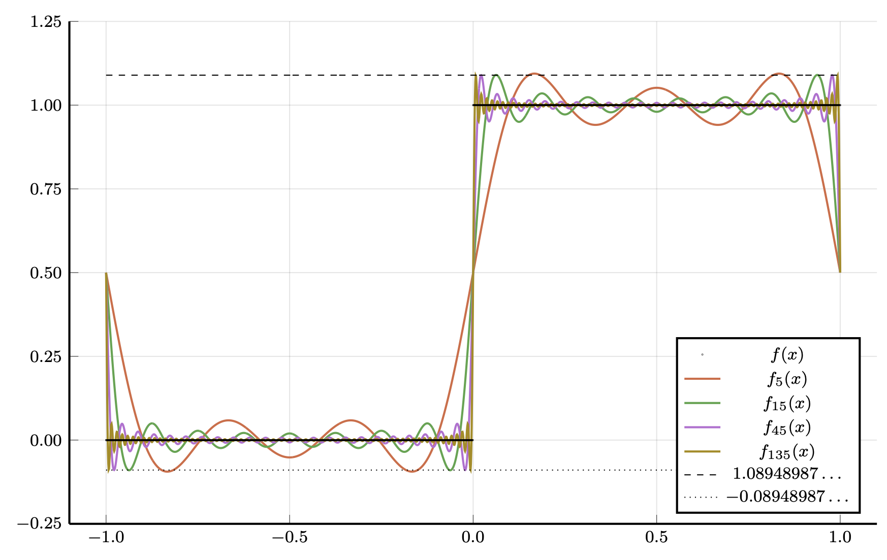

Hoofdstuk 7 - Functieruimten
Doel van dit hoofdstuk
$$ % Math operators % %
% VECTORS% specifically for vectors in F^n
% MATRICES% SCALARS
% LINEAR MAPS% FIELDS
% RELATIONS
% % % % % % % % %
%
$$
- Inzicht krijgen in de complicaties van het werken met functieruimten
- Orthonormale basissen voor functieruimten:
- orthogonale veeltermen:
- belangrijkste eigenschappen
- voornaamste families die relevant zijn in de fysica
- Fourierreeks:
- eigenschappen
- convergentiesnelheid
- verband met discrete Fouriertransformatie
- orthogonale veeltermen:
Doel van dit hoofdstuk
Belangrijkste operatoren op functieruimten:
integraaloperatoren, multiplicatie-operatoren, differentiaaloperatoren
Eigenschappen van onbegrensde operatoren
- Toegevoegde van onbegrensde operator
- Verschil tussen symmetrisch en zelftoegevoegd
- Belang hiervan in de context van differentiaaloperatoren en randvoorwaarden
Intuïtie krijgen voor de spectraaltheorie van begrensde en onbegrensde operatoren op oneindig-dimensionale Hilbertruimten aan de hand van relevante voorbeelden
Functieruimten en normen
(geen stellingen of bewijzen)
Functieruimten
Gegeven een vectorruimte Y over {\mathbb{F}} en een willekeurige verzameling X:
verzameling Y^X van functies f:X \to Y vormt een vectorruimte over {\mathbb{F}}, waarbij de lineaire structuur gewoon puntsgewijs wordt gedefinieerd m.b.v. deze van Y:
(a f + b g)(x) = a f(x) + b g(x), \forall x \in X
Voorbeelden:
- Y = {\mathbb{F}}, X = \{1,\ldots,n\}: Y^X \cong {\mathbb{F}}^n
- Y = {\mathbb{F}}, X = {\mathbb{N}}_0: vectorruimte van oneindig lange rijen
\rightarrow functieruimte wordt typisch gebruikt in de context waar X onaftelbaar is:
- X = [a,b], X = {\mathbb{R}}, X = \Omega \subseteq {\mathbb{R}}^d
\rightarrow bijkomende eigenschappen: continuïteit, kwadratische integreerbaarheid, …
- belangrijk dat deze compatibel zijn met (behouden blijven onder) lineaire combinaties
Lebesgue-ruimten
We willen ook graag minstens een norm (vanaf sectie 7.2: inwendig product):
f:X \to Y \quad \rightarrow \quad{\left\lVert f\right\rVert}_p = \left(\int_{X} {\left\lVert f(x)\right\rVert}_Y^p \,{\mathrm{d}}x\right)^{1/p} \quad ?
Y moet zelf reeds een norm hebben:
vanaf nu Y = {\mathbb{F}}: {\left\lVert f(x)\right\rVert}_Y = {\left\lvert f(x)\right\rvert} (voor de eenvoud, veralgemening triviaal)
We hebben een concept van integreren over X nodig \Rightarrow bijkomende complicaties
- X voldoende regulier: vanaf nu X = [a,b]\subseteq {\mathbb{R}} of X = {\mathbb{R}} (voor de eenvoud)
- de functie f moet “integreerbaar” zijn binnen het gebruikte integraalconcept
- de integraal mag niet divergeren
- de integraal moet voldoen aan driehoeksongelijkheid
- de integraal kan nul worden voor functies die niet de nul-functie zijn
\rightarrow beperken tot deelverzameling van functies: moet deelruimte zijn!
Lebesgue-ruimten
\mathcal{L}^p(I,{\mathbb{F}}) is de verzameling van functies f:I\to {\mathbb{F}} (met dus I=[a,b] of I = {\mathbb{R}}) die integreerbaar zijn en waarvoor \int_I {\left\lvert f(x)\right\rvert}^p \,{\mathrm{d}}x eindig is
preciese definitie hangt af van integraalconcept (zie verder)
als f integreerbaar is, is {\left\lvert f\right\rvert}^p integreerbaar
het geval p=\infty laten we voorlopig buiten beschouwing
\mathcal{L}^p(I,{\mathbb{F}}) vormt een vectorruimte (lineaire combinaties van twee integreerbare functies is integreerbaar, integraal van {\left\lvert a f(x) + b g(x)\right\rvert}^p can begrensd worden met behulp van convexiteit van {\left\lvert\cdot\right\rvert}^p
resulterende definitie {\left\lVert f\right\rVert}_p = \left(\int_I {\left\lvert f(x)\right\rvert}^p \,{\mathrm{d}}x\right)^{1/p} voldoet aan driehoeksongelijkheid (Minkowski)
{\left\lVert f\right\rVert}_p is niet positief definiet, er zijn niet-triviale functies waarvoor {\left\lVert f\right\rVert}_p = 0
\Rightarrow seminorm
Van seminorm naar norm
Observatie 1:voor f,g \in \mathcal{L}^p(I,{\mathbb{F}})
{\left\lVert f\right\rVert}_p = 0 en {\left\lVert g\right\rVert}_p = 0 \Rightarrow {\left\lVert a f + b g\right\rVert}_p = 0
(wegens driehoeksongelijkheid en absolute homogeniteit)
\Rightarrow verzameling U = \{f | {\left\lVert f\right\rVert}_p = 0\} vormt deelruimte van \mathcal{L}^p(I,{\mathbb{F}})
functies waarvoor {\left\lVert f - g\right\rVert}_{p} = 0 \Leftrightarrow f-g \in U noemen we “bijna overal” gelijk; dit is een equivalentierelatie
\rightarrow L^p(I,{\mathbb{F}}) = \mathcal{L}^p(I,{\mathbb{F}})/U: de vectorruimte van equivalentieklassen van functies die bijna overal gelijk zijn
- (in de praktijk werken we nog steeds gewoon met functies, die dan representatief zijn voor alle andere functies binnen die equivalentieklasse)
Van seminorm naar norm
Observatie 2: voor f,g \in \mathcal{L}^p(I,{\mathbb{F}})
{\left\lVert f - g\right\rVert}_{p} = 0 \Rightarrow {\left\lVert f\right\rVert}_p = {\left\lVert g\right\rVert}_p
(wegens {\left\lvert{\left\lVert f\right\rVert}-{\left\lVert g\right\rVert}\right\rvert} \leq {\left\lVert f - g\right\rVert}, eveneens uit driehoeksongelijkheid)
{\left\lVert f\right\rVert}_p neemt voor alle functies binnen een equivalentieklasse dezelfde waarde aan
met elk element uit L^p(I,{\mathbb{F}}) kan een eenduidige waarde {\left\lVert f\right\rVert}_p worden geassocieerd (onafhankelijk van de keuze f binnen de klasse)
Op L^p(I,{\mathbb{F}}) is {\left\lVert\cdot\right\rVert}_p een norm
Is L^p(I,{\mathbb{F}}) metrisch compleet (Banachruimte) ?
deze vraag ereist dat we integralen en limieten kunnen omdraaien, e.g.:
\lim_{n\to \infty} \int_I {\left\lvert f_n(x)\right\rvert}^p\,{\mathrm{d}}x = \int_I {\left\lvert\lim_{n\to\infty} f_n(x)\right\rvert}^p\,{\mathrm{d}}x = \int_I \lim_{n\to\infty} {\left\lvert f_n(x)\right\rvert}^p\,{\mathrm{d}}x \quad ?
tegenvoorbeeld: f_n(x) = 2n^2 \exp(-n^2 x^2)
\Rightarrow: f_n \to 0 terwijl \int_0^1 f_n(x)\,{\mathrm{d}}x = 1 - \exp(-n^2) \to 1
Lebesgue-integraal
Riemann-integraal \int_a^b f(x)\,{\mathrm{d}}x:
partitie P van [a,b]: \Delta_k = [x_{k-1},x_k] met a = x_0 < x_1 < \ldots < x_{n_1} < x_n=b
m_k = \inf_{x \in \Delta_k} f(x) en M_k = \sup_{x \in \Delta_k} f(x):
s_{f,P} = \sum_{k=1}^{n} m_k (x_k - x_{k-1}) en S_{f,P} = \sum_{k=1}^{n} M_k (x_k - x_{k-1})
integraal bestaat als s_f = \sup_{P} s_{f,P} = \inf_{P} S_{f,P} = S_f
(functies met “niet te veel” discontinuïteiten)
werkt niet voor bvb \chi_{\mathbb{Q}}(x) = \begin{cases} 1,& x \in {\mathbb{Q}}\\ 0,& x \in {\mathbb{R}}\setminus {\mathbb{Q}}\end{cases} (Dirichlet functie)
- Voorwaarden voor het omdraaien van limieten en integralen met Riemann-integraal zijn heel streng
- Er zijn rijen van integraarbare functies waarvoor de limiet bestaat maar niet (Riemann)-integreerbaar is
Lebesgue-integraal
- Lebesgue-integraal \int_a^b f(x)\,{\mathrm{d}}x: eerst voor 0 \leq f(x) \leq M
partitie van [0,M]: 0 = y_0 < y_1 < \ldots < y_{n-1} < y_n = M
invers beeld (pre-image) E_k = f^{-1}([y_{k-1},y_k))
l_{f,P} = \sum_{k=1}^{n} y_{k-1} \mu(E_k) en L_{f,P} = \sum_{k=1}^{n} y_k \mu(E_k)
met \mu(E_k) de “grootte” (maat) van E_k
Lebesgue-integraal
Probleem zit verdoken in de maat \mu(E_k):
E_k is niet noodzakelijk een interval; meer algemene deelverzameling van {\mathbb{R}}
We willen graag:
- \mu([a,b]) = \mu([a,b)) = \mu((a,b]) = \mu((a,b)) = b - a (\forall a < b \in {\mathbb{R}})
- \mu\left(\bigcup\{A_i, i= 1,2,\ldots\}\right) = \sum_{i} \mu(A_i) voor disjuncte verzamelingen A_i (countable additivity)
\Rightarrow een \mu met deze eigenschappen kan niet worden gedefinieerd voor de collectie \mathcal{P}({\mathbb{R}}) van alle mogelijke deelverzamelingen van {\mathbb{R}} (of van een interval binnen {\mathbb{R}})
\Rightarrow de definitie van \mu wordt beperkt tot een subcollectie van toegelaten deelverzamelingen van {\mathbb{R}}
\Rightarrow een functie is Lebesgue-integreerbaar als alle inverse beelden E_k = f^{-1}([y_{k-1},y_k)) van dit toegelaten type zijn
\Rightarrow een functie die Riemann-integreerbaar is, is Lebesgue-integreerbaar en de integralen hebben dezelfde waarde
“Lebesgue integralen verhouden zich tot Riemann integralen zoals {\mathbb{R}} tot {\mathbb{Q}}”
“Bijna overal” en “maat nul” (nulverzamelingen)
Een positieve functie f heeft \int_I f(x)\,{\mathrm{d}}x = 0 enkel als de verzameling N=\{x | f(x)>0\} maat nul heeft: \mu(N) = 0
Nulverzamelingen: verzamelingen N met \mu(N)=0
- Individueel punt
- Aftelbaar eindig aantal punten
- Ook onaftelbare verzamelingen kunnen maat nul hebben
Andere “bijna overal” definities:
functies f en g zijn bijna overal gelijk, als er een verzameling N bestaat met \mu(N)=0 zodat f(x)=g(x) voor alle x \in I \setminus N
\lim_{n \to \infty} f_n convergeert “bijna overal” puntsgewijs naar f, als er een verzameling N bestaat met \mu(N)=0 zodat \lim_{n \to \infty} f_n(x) = f(x) voor alle x \in I \setminus N
Compleetheid van L^p(I;{\mathbb{F}})
Er kan worden aangetoond dat L^p(I,{\mathbb{F}}) een Banachruimte is (stelling van Riesz-Fischer)
(zonder bewijs)
uitbreidingen:
voor p=\infty: L^\infty(I,{\mathbb{F}}) gedefinieerd via {\left\lVert f\right\rVert}_\infty = \mathrm{ess}\ \sup_{x\in I} {\left\lvert f\right\rvert} = \inf\big\{M \geq 0 |\ \mu\left(\{x \in I | {\left\lvert f(x)\right\rvert}> M\right\}) = 0\big\}
L^p_w(I,{\mathbb{F}}) met norm {\left\lVert f\right\rVert}_{p,w} = \left(\int_{I} w(x) {\left\lvert f(x)\right\rvert}^p \,{\mathrm{d}}x\right)^{1/p} voor integreerbare functie w met w(x)>0 voor alle x \in I
Bijkomende opmeringen
I = [a,b] (compact): L^p(I,{\mathbb{F}}) {\preccurlyeq}L^q(I,{\mathbb{F}}) als p > q
I = {\mathbb{R}}: L^p(I,{\mathbb{F}}) en L^q(I,{\mathbb{F}}) hebben elk elementen die de andere niet bevat
Interessante dichte deelruimtes als I compact:
- polynomen
- continue functies C^0(I,{\mathbb{F}}), gladde functies C^\infty(I,{\mathbb{F}}), elke C^k(I,{\mathbb{F}}) voor k \in {\mathbb{N}}
\Rightarrow \overline{C^k(I,{\mathbb{F}})} = L^p(I,{\mathbb{F}}): sluiting hangt af van definitie limiet en dus van {\left\lVert\cdot\right\rVert}_p
Interessante dichte deelruimtes als I = {\mathbb{R}}:
C_c^k(I,{\mathbb{F}}): continu (afleidbare) functies met compacte “drager” (support)
\rightarrow \mathrm{supp}(f) = \overline{\{ x \in I |\ f(x) \neq 0\}} \subseteq I
L^p(I,{\mathbb{F}}) is “separabel”: laat aftelbare fundamentele verzameling S toe
(verzameling waarvoor geldt dat \overline{{\mathbb{F}}S} = L^p(I,{\mathbb{F}}), niet noodzakelijk een basis)
- I compact: S=\{x^k,k\in{\mathbb{N}}\}, S=\{\exp({\mathrm{i}}\frac{2\pi}{L} k x), k \in{\mathbb{Z}}\},
- I = {\mathbb{R}}: S=\{x^n \chi_{[-N,N]}, n \in {\mathbb{N}}, N \in {\mathbb{N}}\}
Hilbertruimten en inwendig product
Hilbertruimten en inwendig product
L^2(I,{\mathbb{F}}) is een Hilbertruimte: {\left\lVert\cdot\right\rVert}_2 voldoet aan parallellogramregel en is afkomstig van het inwendig product
{\left\langle f,g\right\rangle} = \int_I \overline{f(x)}g(x)\,{\mathrm{d}}x
L_w^2(I,{\mathbb{F}}) is een Hilbertruimte: {\left\lVert\cdot\right\rVert}_{2,w} voldoet aan parallellogramregel en is afkomstig van het inwendig product
{\left\langle f,g\right\rangle}_w = \int_I w(x) \overline{f(x)}g(x)\,{\mathrm{d}}x
met dus w(x) > 0 voor x \in I (op nulverzameling na)
nog algemener: {\left\langle f,g\right\rangle} = \iint_I w(x,y) \overline{f(x)}g(y)\,{\mathrm{d}}x{\mathrm{d}}y ?
\rightarrow weinig gebruikt, precieze voorwaarden op w(x,y) niet duidelijk
Orthogonale veeltermen
Orthogonale veeltermen
\{x^n, n\in{\mathbb{N}}_0\} is een fundamentele verzameling voor:
- L^2([a,b], {\mathbb{F}})
- L^2_w(I, {\mathbb{F}}) voor I = {\mathbb{R}} of I = {\mathbb{R}}_{\geq 0} in combinatie met goed gekozen w
\{x^n, n\in{\mathbb{N}}_0\} kan omgevormd worden tot een basis door de equivalente orthogonale/orthonormale rij te vormen via het Gram-Schmidt algoritme (en dan het expansietheoriem toe te passen)
Verschillende families van orthogonale polynomen (door keuzes van I en w)
Orthogonale veeltermen
Gram-Schmidt algoritme toegepast op \{x^n, n\in{\mathbb{N}}_0\} \Rightarrow \{p_n(x), n \in {\mathbb{N}}_0\} met
p_n(x) is een polynoom van graad n met reële coëfficiënten
volgt uit structuur Gram-Schmidt
p_n(x) is orthogonaal op alle met polynomen van graad <n
niet steeds genormaliseerd: {\left\langle p_n,p_m\right\rangle}_w \sim C_n \delta_{n,m}
voor symmetrisch interval en w(x)=w(-x):
p_n bevat enkel even (oneven) machten van x voor n even (oneven)
x p_n(x) = a_{n} p_{n+1}(x) + b_n p_{n}(x) + c_{n} p_{n-1}(x)
met c_0 = 0 en c_{n} {\left\langle p_{n-1},p_{n-1}\right\rangle}_w = a_{n-1} {\left\langle p_n,p_n\right\rangle}_w \Rightarrow c_n = a_{n-1}
vermenigvuldigen met x heeft tridiagonale “matrixrepresentatie” t.o.v. basis p_n
als normalisatie van basis n-onafhankelijk:
c_n = a_{n-1} \Leftrightarrow symmetrische matrixrepresentatie
Orthogonale veeltermen
Orthogonale projector op deelruimte van polynomen van graad n:
({\hat{P}}_n f)(x) = \int_I w(y) K_n(x,y) f(y)\,{\mathrm{d}}y = \int_I w(y) \left[\sum_{k=0}^{n} \frac{p_k(x) p_k(y)}{{\left\langle p_k,p_k\right\rangle}_w} \right] f(y)\,{\mathrm{d}}y
met hierin (Christoffel-Darboux formule): \sum_{k=0}^{n} \frac{p_k(x) p_k(y)}{{\left\langle p_k,p_k\right\rangle}_w} = \begin{cases} \frac{a_n}{{\left\langle p_n,p_n\right\rangle}_w} \frac{ p_{n+1}(x) p_n(y) - p_{n}(x) p_{n+1}(y)}{x-y},& x \neq y\\ \frac{a_n}{{\left\langle p_n,p_n\right\rangle}_w} ( p_{n+1}'(x) p_n(y) - p_{n}'(x) p_{n+1}(y)),& x = y \end{cases}
p_n heeft n verschillende nulpunten in I;
de nulpunten van p_n liggen tussen deze van p_{n+1} in (alternerend)
Orthogonale veeltermen: Legendre
I = [-1,+1], w(x)=1:
\begin{align*} \begin{split} &P_0(x) = 1,\quad P_1(x) = x,\quad P_2(x) = \frac{1}{2}(3 x^2 - 1),\\ &P_3(x) = \frac{1}{2}(5x^3-3x),\quad P_4(x) = \frac{1}{8}(35 x^4 - 30x^2 + 3), \quad \ldots \end{split} \end{align*}
Genererende functie (Legendre 1782): \frac{1}{\sqrt{1 - 2x t + t^2}} = \sum_{n=0}^{+\infty} P_n(x) t^n
\rightarrow nuttig om eigenschappen aan te tonen:
uit \int_{-1}^{+1} \frac{1}{\sqrt{1 - 2x t + t^2}} \frac{1}{\sqrt{1 - 2x s + s^2}} \,{\mathrm{d}}x = \sum_{n,m=0}^{+\infty} {\left\langle P_n,P_m\right\rangle} t^n s^m = \frac{1}{\sqrt{ts}} \log \frac{1 + \sqrt{ts}}{1 - \sqrt{ts}}
\Rightarrow {\left\langle P_n,P_m\right\rangle} = \int_{-1}^{+1} P_n(x) P_m(x) \,{\mathrm{d}}x = \frac{2}{2n +1} \delta_{n,m}
uit afgeleide naar t \rightarrow Bonnet recursieformule:
(n+1) P_{n+1}(x) + n P_{n-1}(x) = (2n+1) x P_n(x)
Rodrigues formule: P_n(x) = \frac{1}{2^n n!} \frac{{\mathrm{d}}^n\ }{{\mathrm{d}}x^n} (x^2 -1)^n
Orthogonale veeltermen: Hermite
I = {\mathbb{R}}, w(x)=\exp(-x^2): (polynomen worden kwadratisch integreerbaar)
\begin{align*} \begin{split} &H_0(x) = 1,\quad H_1(x) = 2x,\quad H_2(x) = 4 x^2 - 2,\\ &H_3(x) = 8x^3-12x,\quad H_4(x) = 16 x^4 - 48x^2 + 12, \quad \ldots \end{split} \end{align*}
Genererende functie: \exp( 2 x t - t^2) = \sum_{n=0}^{+\infty} \frac{1}{n!} H_n(x) t^n
\rightarrow nuttig om eigenschappen aan te tonen:
uit \int_{-\infty}^{+\infty} {\mathrm{e}}^{-x^2} {\mathrm{e}}^{2x s - s^2} {\mathrm{e}}^{2x s - s^2}\,{\mathrm{d}}x = \sum_{m,n=0}^{+\infty} \frac{{\left\langle H_m,H_n\right\rangle}_w}{m! n!} s^m t^n = \sqrt{\pi} {\mathrm{e}}^{2 s t}
\Rightarrow {\left\langle H_m,H_n\right\rangle}_w = \int_{-\infty}^{+\infty} {\mathrm{e}}^{-x^2} H_m(x) H_n(x)\,{\mathrm{d}}x = 2^n n! \sqrt{\pi} \delta_{m,n}
uit afgeleide naar t \rightarrow Bonnet recursieformule:
H_{n+1}(x) + 2n H_{n-1}(x) = 2 x H_{n}(x)
Rodrigues formule: H_n(x) = (-1)^n {\mathrm{e}}^{x^2} \frac{{\mathrm{d}}^n}{{\mathrm{d}}x^n} {\mathrm{e}}^{-x^2}
\{\phi_n(x) \sim H_n(x) {\mathrm{e}}^{-\frac{x^2}{2}},n \in {\mathbb{N}}\}
is orthogonale fundamentele verzameling (basis) voor L^2({\mathbb{R}},{\mathbb{F}})
Orthogonale veeltermen: Laguerre
I = [0,+\infty), w(x)=\exp(-x):
\begin{align*} \begin{split} &L_0(x) = 1,\quad L_1(x) = 1-x,\quad L_2(x) = \frac{1}{2}(x^2 - 4x + 2),\\ &L_3(x) = \frac{1}{6}(-x^3 + 9x^2 - 18 x +6)\quad \ldots \end{split} \end{align*}
Genererende functie: \frac{1}{1-t} \exp\left(-x\frac{ t}{1 - t}\right) = \sum_{n=0}^{+\infty} L_n(x) t^n
\rightarrow nuttig om eigenschappen aan te tonen:
uit \int_{0}^{+\infty} {\mathrm{e}}^{-x} \frac{1}{1-s} \exp\left(\frac{-x s}{1 - s}\right)\frac{1}{1-t} \exp\left(\frac{-x t}{1 - t}\right)\,{\mathrm{d}}x = \sum_{m,n=0}^{+\infty} {\left\langle L_m,L_n\right\rangle}_w s^mt^n = \frac{1}{1-ts}
\Rightarrow {\left\langle L_m,L_n\right\rangle}_w = \int_0^{+\infty} {\mathrm{e}}^{-x} L_m(x) L_n(x) \,{\mathrm{d}}x = \delta_{m,n}
uit afgeleide naar t \rightarrow Bonnet recursieformule:
(n+1) L_{n+1}(x) + n L_{n-1}(x) = (2n + 1 - x) L_n(x)
Rodrigues formule: L_n(x) = \frac{{\mathrm{e}}^x}{n!} \frac{{\mathrm{d}}^n\ }{{\mathrm{d}}x^n} (x^n {\mathrm{e}}^{-x})
Orthogonale veeltermen: Chebyshev
I = [-1,1], w(x) = (1-x^2)^{-1/2}:
\begin{align*} \begin{split} &T_0(x) = 1,\quad T_1(x) = x,\quad T_2(x) = 2x^2-1,\quad T_3(x) = 4x^3 - 3x,\quad \ldots \end{split} \end{align*}
Genererende functie: \frac{1- x t}{1 - 2x t+ t^2} = \sum_{n=0}^{+\infty} T_n(x) t^n
In dit geval: {\left\langle f,g\right\rangle}_w = \int_{-1}^{+1} \frac{1}{\sqrt{1-x^2}} f(x) g(x)\,{\mathrm{d}}x = \int_{0}^{+\pi} f(\cos \theta) g(\cos \theta) \,{\mathrm{d}}\theta
T_n(x) = T_n(\cos \theta) = \cos(n \theta) = \cos(n \arccos x)
\begin{align*} {\left\langle T_m,T_n\right\rangle}_w = \int_{-1}^{+1} \frac{T_m(x) T_n(x)}{\sqrt{1-x^2}} \,{\mathrm{d}}x = \int_0^{+\pi} \cos(m\theta)\cos(n\theta)\,{\mathrm{d}}\theta = \begin{cases} \pi, & m = n = 0\\ \frac{\pi}{2} \delta_{n,m}, &\text{otherwise}\end{cases} \end{align*}
T_{n\pm 1}(\cos \theta) = \cos(\theta) \cos(n \theta) \mp \sin(\theta) \sin(n\theta):
recursierelatie T_{n+1}(x) = 2x T_n(x) - T_{n-1}(x)
\rightarrow vooral in numerieke analyse, statistiek, minder in fysica
Toepassing: Gaussische kwadratuur
Numerieke benadering van integraal op basis van functiewaarden op een discrete, eindige verzameling \{x_i \in I; i=1,\ldots,n\}:
\int_I w(x) f(x)\,{\mathrm{d}}x \approx \sum_{i=1}^{n} a^i f(x_i)
\rightarrow moet lineaire functionaal zijn van de functiewaarden \{f(x_i)\}
met n punten: benadering exact voor veeltermen van graad \leq n-1
\begin{align*} \begin{bmatrix} 1 & 1 & 1 & \dots & 1\\ x_1 & x_2 & x_3 & \dots & x_n\\ (x_1)^2 & (x_2)^2 & (x_3)^2 & \dots & (x_n)^2\\ \vdots & & & \ddots & \vdots\\ (x_1)^{n-1} & (x_2)^{n-1} & (x_3)^{n-1} & \dots & (x_n)^{n-1} \end{bmatrix} \begin{bmatrix} a^1 \\ a_2 \\ a_3 \\ \vdots \\ a_{n} \end{bmatrix} = \begin{bmatrix} b^0\\ b^1 \\ b^2 \\ \vdots \\ b^{n-1} \end{bmatrix} \end{align*}
met b^k = \int_I w(x) x^k\,{\mathrm{d}}x: lineair systeem met Vandermonde matrix
Toepassing: Gaussische kwadratuur
Kunnen we beter doen als we de \{x_i\} slim kiezen?
Kunnnen we de benadering exact maken voor veeltermen tot graad \leq 2n-1 ?
Moeilijk niet-lineair probleem?
Gauss: kies \{x_i; i=1,\ldots,n\} als nulpunten van de orthogonale veelterm p_n geassocieerd aan I en w
we kiezen a^i zodat exact voor veeltermen tot graad n-1
\int w(x) p_n(x) q(x)\,{\mathrm{d}}x = 0 voor elke q van graad \leq n-1
\rightarrow benaderingsformule correct als p_n(x_i) =0 voor elke x_i
willekeurige polynoom van graad \leq 2n-1:
f(x) = p_n(x) q(x) + r(x) met r(x) veelterm met graad \leq n-1
\Rightarrow \int w(x) f(x)\,{\mathrm{d}}x = \int w(x) r(x)\,{\mathrm{d}}x = \sum a^i r(x_i) = \sum a^i f(x_i)
Vandermonde-matrix inverteren is numeriek instabiel: eigenschappen van orthogonale veeltermen kunnen ook helpen om a^i te vinden
\rightarrow: niet te kennen
Fourierreeksen
Periodieke functies
periodieke functies f:{\mathbb{R}}\to {\mathbb{C}} met f(x+L) = f(x)
- functiewaarden x \in [0,L) \to periodiek uitbreiden
- functie op circel \cong 1-dimensionale torus {\mathbb{T}}^1 = {\mathbb{R}}/(L{\mathbb{Z}}).
trigonometische veelterm van graad n:
\begin{align*} f(x) &= \frac{a_0}{2} + \sum_{k=1}^{n} a_k \cos\left(\frac{2\pi}{L} k x\right) + \sum_{k=1}^n b_k \sin\left(\frac{2\pi}{L} k x\right)= \sum_{k=-n}^{+n} c_k \exp\left({\mathrm{i}}\frac{2\pi}{L} k x\right) \end{align*}
a_k = c_k + c_{-k} voor k \in {\mathbb{N}} en b_k = {\mathrm{i}}(c_k - c_{-k}) voor k\in {\mathbb{N}}_0
orthonormale basis: S=\left\{ \varphi_k(x) = \frac{1}{\sqrt{L}} {\mathrm{e}}^{+{\mathrm{i}}\frac{2\pi}{L} k x};\ k =-n,-n+1,\dots,0,\dots, n-1, n\right\}
meerdimensionale Fourier-basis (\boldsymbol{x} \in \mathbb{T}^d = L_1 \times L_2 \times \cdots \times L_d):
\left\{\varphi_{\boldsymbol{k}}(\boldsymbol{x}) = \frac{1}{(L_1 L_2 \dots L_d)^{1/2}} {\mathrm{e}}^{+{\mathrm{i}}(\frac{2\pi}{L_1} k_1 x_1 + \dots + \frac{2\pi}{L_d} k_d x_d)}; \boldsymbol{k} \in {\mathbb{Z}}^d\right\}
Trigonometrische veeltermen en Fouriercoefficiënten
Fouriercoefficiënten: \widehat{f}_k = {\left\langle\varphi_k,f\right\rangle} = \frac{1}{\sqrt{L}} \int_{0}^{L} f(x) {\mathrm{e}}^{-{\mathrm{i}}\frac{2\pi}{L} k x}\,{\mathrm{d}}x (\forall k \in {\mathbb{Z}})
Orthogonale projector op trigonometrische veeltermen van graad n:
\begin{align*} f_n(x) = ({\hat{P}}_n f)(x) &= \sum_{k=-n}^{+n} {\left\langle\varphi_k,f\right\rangle} \varphi_k(x)= \sum_{k=-n}^{+n} \widehat{f}_k \varphi_k(x) = \frac{1}{\sqrt{L}} \sum_{k=-n}^{+n} \widehat{f}_k {\mathrm{e}}^{+{\mathrm{i}}\frac{2\pi}{L} k x} \\ &= \sum_{k=-n}^{+n} \frac{1}{L} \int_0^L f(t) {\mathrm{e}}^{+ {\mathrm{i}}\frac{2\pi}{L} k (x - t)}\,{\mathrm{d}}t = \int_0^L D_n(x-t) f(t)\,{\mathrm{d}}t \end{align*}
met D_n(x) = \frac{1}{L} \sum_{k=-n}^{+n} {\mathrm{e}}^{+ {\mathrm{i}}\frac{2\pi}{L} k x} = \frac{\sin\left(\frac{(2n+1)\pi}{L}x\right)}{L \sin\left(\frac{\pi}{L}x\right)} (Dirichlet kernel)
Fourierreeks: \lim_{n \to \infty} \frac{1}{\sqrt{L}} \sum_{k=-n}^{+n} \widehat{f}_k {\mathrm{e}}^{+{\mathrm{i}}\frac{2\pi}{L} k x}
Fouriercoefficiënten: eigenschappen
\widehat{f}_k = {\left\langle\varphi_k,f\right\rangle} = \frac{1}{\sqrt{L}} \int_{0}^{L} f(x) {\mathrm{e}}^{-{\mathrm{i}}\frac{2\pi}{L}k x}\,{\mathrm{d}}x
Bestaan (\forall k \in {\mathbb{Z}}) voor elke f \in L^1([0,L];{\mathbb{C}}) met {\left\lvert\widehat{f}_k\right\rvert} \leq \frac{1}{\sqrt{L}} {\left\lVert f\right\rVert}_1 \Rightarrow {\left\lVert\widehat{f}\right\rVert}_{\infty} = \sup_{k \in {\mathbb{Z}}} {\left\lvert\widehat{f}_k\right\rvert} \leq \frac{1}{\sqrt{L}}{\left\lVert f\right\rVert}_1
Lineariteit: h(x) = a f(x) + b g(x) \implies \widehat{h}_k = a \widehat{f}_k + b \widehat{g}_k
Translatie (in ruimte/tijd): h(x) = f(x-x_0) \implies \widehat{h}_k = {\mathrm{e}}^{-{\mathrm{i}}\frac{2\pi}{L}k x_0} \widehat{f}_k
Modulatie (verschuiging in frequentie): h(x) = f(x) {\mathrm{e}}^{{\mathrm{i}}\frac{2\pi}{L} k_0 x} \implies \widehat{h}_k = \widehat{f}_{k-k_0}
Conjugatie: h(x) = \overline{f(x)} \implies \widehat{h}_k = \overline{\widehat{f}_{-k}}
Tijd-/frequentie-omkering: h(x) = f(-x) \implies \widehat{h}_k = \widehat{f}_{-k}
(Discrete) herschaling: h(x) = f(s x) \implies \widehat{h}_{k} = \begin{cases} \frac{1}{s}\widehat{f}_{k/s} ,&\text{$k$ is veelvoud van $s$}\\ 0,&\text{anders}\end{cases},\quad\forall s \in {\mathbb{N}}_0
Convoluties
Convolutie van periodieke functies:
\begin{align*}(f \ast g)(x) &= \int_0^L f(x-y \mod L) g(y)\,{\mathrm{d}}y \\ &= \int_0^L f(y) g(x-y \mod L)\,{\mathrm{d}}y = (g \ast f)(x) \end{align*}
- opnieuw periodieke functie
- voor f,g \in L^1([0,L]) is f\ast g \in L^1([0,L]) (aan bord)
Fouriercoefficiënten:
h(x) = (f \ast g)(x) = \int_0^L f(x-y \mod L) g(y)\,{\mathrm{d}}y \implies \widehat{h}_k = \sqrt{L} \widehat{f}_k \widehat{g}_k
Convergentie (geen stellingen/bewijzen)
Beschouw f_n = \frac{1}{\sqrt{L}} \sum_{k=-n}^{+n} \widehat{f}_k {\mathrm{e}}^{+{\mathrm{i}}\frac{2\pi}{L} k x}
De Fourierbasis is een fundamentele verzameling in L^1([0,L],{\mathbb{F}}):
er bestaat een rij (\tilde{f}_n) van trigonometrische veeltermen zodat
\lim_{n\to \infty} {\left\lVert\tilde{f}_n - f\right\rVert}_1 = 0
voor alle f \in L^1([0,L],{\mathbb{F}}) (concreet: \tilde{f}_n = \frac{f_0 + f_1+f_2+\ldots+f_n}{n+1}).
Wat zegt dit over \lim_{n\to \infty} {\left\lVert f_n - f\right\rVert}_2 ?
- bemerk dat L^2([0,L],{\mathbb{F}}) {\preccurlyeq}L^1([0,L],{\mathbb{F}})
- maar {\left\lVert\cdot \right\rVert}_2 is strengere maat van convergentie
- L^2([0,L],{\mathbb{F}}) kan geen niet-triviale functies bevatten die loodrecht staan op alle Fourier/trigonometrische polynomen
\rightarrow expansiestelling: \lim_{n\to \infty} {\left\lVert f_n - f\right\rVert}_2=0
\implies \sum_{k \in {\mathbb{Z}}} {\left\lvert\widehat{f}_k\right\rvert}^2 = {\left\lVert\widehat{f}\right\rVert}_2^2 en dus voor grote k: {\left\lvert\widehat{f}_k\right\rvert} daalt sneller dan {\left\lvert k\right\rvert}^{-1/2}
Gladheid en convergentiesnelheid
Een periodieke functie is continu, i.e. f \in C^0({\mathbb{T}}^1_L), als \begin{align*} f(x) &= \lim_{y \to x} f(y), \forall x \in (0,L),&\text{and}&&\lim_{y \stackrel{>}{\to} 0} f(y) &= \lim_{y \stackrel{<}{\to} L} f(y). \end{align*}
f \in C^p({\mathbb{T}}^1_L): h(x) = f^{(p)}(x)\implies \widehat{h}_k = \left({\mathrm{i}}\frac{2\pi}{L} k\right)^p \widehat{f}_k (bewijs via partiële integratie)
Convergentiesnelheid voor uniforme convergentie: {\left\lVert f_n - f\right\rVert}_\infty \leq \sqrt{\frac{2}{L(2p-1)}} \frac{1}{n^{p-1/2}} \left[\sum_{k \in {\mathbb{Z}}} {\left\lvert k\right\rvert}^{2p} {\left\lvert\widehat{f}_k\right\rvert}^2\right]^{1/2} (zonder bewijs)
voor willekeurige p > 1/2
als Fourierreeks uniform convergeert, is limiet continu
enkel mogelijk als f continu is: noodzakelijk maar niet voldoende
als f' \in L^2([0,L],{\mathbb{F}}) \implies \sum_{k\in {\mathbb{Z}}} {\left\lvert k\right\rvert}^2{\left\lvert\widehat{f}_k\right\rvert}^2 = \left(\frac{L}{2\pi}\right)^2 {\left\lVert f'\right\rVert}_2^2 < \infty
\implies Fourierreeks voor f convergeert uniform
Convoluties herbekeken
convolutie h = f \ast g \leftrightarrow \widehat{h}_k = \sqrt{L} \widehat{f}_k \ast \widehat{g}_k
f, g \in L^2([0,L],{\mathbb{F}}) \implies {\left\lvert\widehat{f}_k\right\rvert}, {\left\lvert\widehat{g}_k\right\rvert} < {\left\lvert k\right\rvert}^{-1/2} \implies {\left\lvert\widehat{h}_k\right\rvert} < {\left\lvert k\right\rvert}^{-1}
\Rightarrow h=f \ast g heeft uniform convergerende Fourierreeks (en is dus continu)
omgekeerde resultaat?
discrete convolutie: \widehat{h}_k = (\widehat{f}\ast \widehat{g})_k=\sum_{l\in {\mathbb{Z}}} \widehat{f}_{k-l} \widehat{g}_l = \sum_{l\in {\mathbb{Z}}} \widehat{f}_{l} \widehat{g}_{k-l} = (\widehat{g}\ast \widehat{f})_k
h(x) = f(x) g(x)\implies \widehat{h}_k =\frac{1}{\sqrt{L}} (\widehat{f} \ast \widehat{g})_k = \frac{1}{\sqrt{L}} \sum_{\ell \in {\mathbb{Z}}} \widehat{f}_{k-l} \widehat{g}_l
onder welke voorwaarden? niet te kennen
absoluut sommeerbare rijen: \widehat{f} \in \ell^1({\mathbb{Z}},{\mathbb{C}}): \sum_{k\in{\mathbb{Z}}} {\left\lvert\widehat{f}_k\right\rvert} < \infty
\widehat{f}\in \ell^1({\mathbb{Z}}) \implies Fourierreeks convergeert absoluut \implies Fourierreeks convergeert uniform \implies f continu
\widehat{f},\widehat{g} \in \ell^1({\mathbb{Z}}) \implies \widehat{f}\ast \widehat{g} \in \ell^1({\mathbb{Z}})
continuïteit van f en g noodzakelijk maar niet voldoende
Stuksgewijze continuïteit en Gibbsfenoneem
f(x) = H(x) = \frac{1}{2}(1 + \mathop{\mathrm{sgn}}(x)) op interval [-L/2,+L/2]
\begin{align*} \widehat{f}_k =\begin{cases} \frac{\sqrt{L}}{2},&k=0\\\frac{{\mathrm{i}}\sqrt{L}}{2\pi} \frac{\cos\left(\pi k\right)-1}{k},&k \neq 0 \end{cases} = \begin{cases} \frac{\sqrt{L}}{2}\delta_{k,0},&\text{$k$ even}\\ \frac{-{\mathrm{i}}\sqrt{L}}{\pi} \frac{1}{k},&\text{$k$ odd} \end{cases} \end{align*}
{\left\lvert\widehat{f}_k\right\rvert} \sim {\left\lvert k\right\rvert}^{-1}: geen absolute of uniforme convergentie \Leftrightarrow niet continu
f_{2m+1}(x) = \frac{1}{\sqrt{L}}\sum_{{\left\lvert k\right\rvert}\leq 2m+1} \widehat{f}_k {\mathrm{e}}^{+{\mathrm{i}}\frac{2\pi}{L} k x} = \frac{1}{2}+\frac{2}{\pi} \left[ \sin\left(\frac{2\pi}{L} x\right) + \frac{1}{3} \sin\left(\frac{6\pi}{L} x\right) + \frac{1}{5} \sin\left(\frac{10\pi}{L} x\right) + \dots \right]
f_{2m+1}(0) = 1/2 \Rightarrow \lim_{n\to \infty} f_n(0) = 1/2 = (f(0^-)+f(0^+))/2
f_{2m}\left(\frac{L}{4m}\right) = \frac{1}{2} + \frac{2}{\pi} \sum_{l=0}^{m-1} \frac{\sin\left(\pi \frac{2l+1}{2m}\right)}{(2l+1)} = \frac{1}{2} + \frac{1}{\pi}\left(\frac{\pi}{m}\right) \sum_{l=0}^{m-1} \frac{\sin\left(\pi \frac{2l+1}{2m}\right)}{\pi \frac{2l+1}{2m}}
\qquad \stackrel{m\to\infty}{\longrightarrow} \frac{1}{2} + \frac{1}{\pi} \int_0^\pi \frac{\sin(x)}{x}\,{\mathrm{d}}x
Stuksgewijze continuïteit en Gibbsfenoneem
- Gibbsfenomeen: functie met discontinuïteit f(x_0^{\pm}) = f_0 \pm \frac{1}{2} a
- \lim_{n\to\infty} f_n(x_0) = f_0
- \lim_{n \to \infty} f_n\left(x_0 \pm \frac{L}{2n} \right) = f_0 \pm \frac{a}{\pi} \int_0^{\pi} \frac{\sin(x)}{x}\,{\mathrm{d}}x = f(x_0)^\pm \pm a \left[\frac{1}{\pi} \int_0^{\pi} \frac{\sin(x)}{x}\,{\mathrm{d}}x - \frac{1}{2}\right] \qquad= f(x_0)^\pm \pm a \cdot (0.089489872236\dots)
- 
Relatie met discrete Fouriertransformatie
f(x) = \frac{1}{\sqrt{L}} \sum_{k \in {\mathbb{Z}}}\widehat{f}_k {\mathrm{e}}^{+{\mathrm{i}}\frac{2\pi}{L} k x}.
‘Bemonster’ (sample) f:
f_j = f(x_j) met x_j = j \epsilon; j=0,1,\dots, N-1 en N=L/\epsilon
Discrete Fouriertransformatie van ‘samples’ \begin{align*} F^k &= \frac{1}{\sqrt{N}} \sum_{j = 0}^{N-1} f_j {\mathrm{e}}^{-{\mathrm{i}}\frac{2\pi}{N} k j} =\frac{1}{\sqrt{N}} \frac{1}{\sqrt{L}} \sum_{j=0}^{N-1} \left(\sum_{l \in {\mathbb{Z}}} \widehat{f}_l {\mathrm{e}}^{+{\mathrm{i}}\frac{2\pi}{L} l j \epsilon}\right) {\mathrm{e}}^{-{\mathrm{i}}\frac{2\pi}{N} k j}\nonumber \\ & = \frac{\sqrt{\epsilon}}{N} \sum_{l \in {\mathbb{Z}}} \widehat{f}_l \sum_{j=0}^{N-1} {\mathrm{e}}^{{\mathrm{i}}\frac{2\pi}{N} j (l-k)} = \sqrt{\epsilon} \sum_{p \in {\mathbb{Z}}} \widehat{f}_{k + p N}. \end{align*}
Snel dalende Fouriercoefficiënten: F^k = \widehat{f}_{\min(k, k-N)} + \dots
Fouriercoefficiënten exact begrensd: \widehat{f}_k = 0 voor {\left\lvert k\right\rvert}>n \Leftrightarrow f is trigonometrische veelterm van graad n
\Rightarrow exacte reconstructie mogelijk uit samples als \epsilon \leq L/(2n+1)
Operatoren op Hilbertruimten
Veelvoorkomende operatoren op functieruimten
Hilbertuimte H = L^2(I,{\mathbb{C}}): lineaire afbeeldingen f \mapsto g met f,g \in H
Integraaloperatoren: g(x) = ({\hat{A}}f)(x) = \int_I A(x,y) f(y) \,{\mathrm{d}}y
- A:I \times I \to {\mathbb{C}}: (integraal)kern van de ‘integraaltransformatie’
- meest directe veralgemening van een matrix {\mathsf{A}} en w^i = A^i_{\ j} v^j
Vermenigvuldigingsoperatoren: g(x) = ({\hat{M}}_h f)(x) = h(x) f(x)
belangrijkste voorbeeld: “positie-operator” {\hat{X}}
\rightarrow {\hat{M}}_h = h({\hat{X}})
vergelijkbaar met diagonaalmatrices
\rightarrow {\hat{M}}_h als integraaloperator met A(x,y) = h(x)\delta(x-y) ? (zie later)
Veelvoorkomende operatoren op functieruimten
Differentiaaloperatoren:
- bekendste voorbeeld: g(x) = ({\hat{D}}f)(x) = f'(x)
- vaak geschreven als {\hat{P}} = -{\mathrm{i}}{\hat{D}} (momentum-operator)
- andere differentiaaloperatoren: p({\hat{D}}) met p een veelterm
Identiteitsoperator: g(x) = ({\hat{1}}f)(x) = f(x)
resolutie van de identiteit t.o.v. orthonormale basis:
f(x) = \sum_{n =0}^{+\infty} {\left\langle\varphi_n,f\right\rangle} \varphi_n(x) = \int_I \sum_{n=0}^{+\infty} \varphi_n(x) \overline{\varphi_n(y)} f(y)\,{\mathrm{d}}y
\rightarrow neemt de vorm aan van integraaloperator met kern
A(x,y) = \sum_{n=0}^{+\infty} \varphi_n(x) \overline{\varphi_n(y)}
\Rightarrow A(x,y) = \delta(x-y) ? (zie later)
Veelvoorkomende operatoren op functieruimten
Voor functies f met domein {\mathbb{R}}:
- Translatie-operator: ({\hat{\tau}}_a f)(x) = f(x - a) voor a \in {\mathbb{R}}
- Herschalingsoperator: ({\hat{\sigma}}_s f)(x) = f(s x) voor s \in {\mathbb{R}}_{\neq 0}, of s \in {\mathbb{R}}_{> 0}
- Spiegeloperator: ({\hat{\pi}} f)(x) = f(-x)
Voor functies met domein {\mathbb{R}}^d:
- voor de hand liggende uitbreiding, en ook rotatie-operator.
Domein van een operator
Sommige operatoren hebben niet de volledige Hilbertruimte als domein:
- {\hat{D}} kan enkel op afleidbare functies werken
- {\hat{M}}_h f is mogelijks niet meer kwadratisch integreerbaar
\rightarrow domein is deel
verzamelingruimte van Hbeschouw operator {\hat{A}} met domein \mathop{\mathrm{\mathcal{D}}}_{{\hat{A}}} {\preccurlyeq}H:
- als {\hat{A}} begrensd \Rightarrow continu \Rightarrow actie van {\hat{A}} ook gedefinieerd op \overline{\mathop{\mathrm{\mathcal{D}}}_{{\hat{A}}}}
- als \overline{\mathop{\mathrm{\mathcal{D}}}_{{\hat{A}}}} \neq H, definieer actie op {v}\in \overline{\mathop{\mathrm{\mathcal{D}}}_{{\hat{A}}}}^\perp als {\hat{A}}({v}) = {o}
\Rightarrow voor begrensde operatoren: \mathop{\mathrm{\mathcal{D}}}_{{\hat{A}}} kan altijd gelijk worden gekozen aan H
\Rightarrow voor onbegrensde operatoren: operatoren waarvan het domein \mathop{\mathrm{\mathcal{D}}}_{{\hat{A}}} dicht is in V, maar geen uitbreiding naar randpunten mogelijk wegens gebrek aan continuïteit
bijvoorbeeld: (continu) afleidbare functies zijn dicht in L^2(I)
\rightarrow kies \mathop{\mathrm{\mathcal{D}}}_{{\hat{D}}} = C^1(I,{\mathbb{F}})
Domein van een operator
Vanaf nu: \mathop{\mathrm{End}}(H) = verzameling van alle lineaire afbeeldingen van een dichte deelruimte van H naar H (“densily defined”)
{\hat{A}},{\hat{B}} \in \mathop{\mathrm{End}}(V) met domein \mathop{\mathrm{\mathcal{D}}}_{{\hat{A}}}, \mathop{\mathrm{\mathcal{D}}}_{{\hat{B}}}:
beeld/bereik \mathcal{R}_{{\hat{A}}} = \mathop{\mathrm{im}}({\hat{A}}) = \{ {\hat{A}}{v}| {v}\in \mathop{\mathrm{\mathcal{D}}}_{{\hat{A}}}\}
gelijkheid: {\hat{A}} = {\hat{B}} \iff \mathop{\mathrm{\mathcal{D}}}_{{\hat{A}}} = \mathop{\mathrm{\mathcal{D}}}_{{\hat{B}}} en {\hat{A}}{v}= {\hat{B}} {v} voor alle {v}\in \mathop{\mathrm{\mathcal{D}}}_{{\hat{A}}}
restrictie/extensie: {\hat{A}} \subset {\hat{B}} \iff \mathop{\mathrm{\mathcal{D}}}_{{\hat{A}}} {\preccurlyeq}\mathop{\mathrm{\mathcal{D}}}_{{\hat{B}}} en {\hat{A}}{v}= {\hat{B}} {v} voor alle {v}\in \mathop{\mathrm{\mathcal{D}}}_{{\hat{A}}}
\rightarrow {\hat{B}} is een extensie van {\hat{A}}, {\hat{A}} is een restrictie van {\hat{B}}
\Rightarrow een (onbegrensde) operator is gedefinieerd door zijn actie EN zijn domein!
- als fysici denken we meestal niet na over domein
- behalve voor afleidingsoperatoren: randvoorwaarden (zie later)
Begrensde en onbegrensde operatoren
Integraaloperator:
{\left\lVert{\hat{A}}f\right\rVert}^2 = \int_I \underbrace{{\left\lvert\int_I A(x,y) f(y)\,{\mathrm{d}}y\right\rvert}^2}_{\Downarrow\ \text{Cauchy-Schwarz}} \,{\mathrm{d}}x
\quad\leq \int_I \left(\int_I {\left\lvert A(x,y)\right\rvert}^2\,{\mathrm{d}}y\right)^2 \left(\int_I f(y),{\mathrm{d}}y\right)^2\,{\mathrm{d}}x = \left(\int_I\int_I {\left\lvert A(x,y)\right\rvert}^2 \,{\mathrm{d}}y{\mathrm{d}}x\right) {\left\lVert f\right\rVert}^2
\Rightarrow begrensd als \left(\int_I\int_I {\left\lvert A(x,y)\right\rvert}^2 \,{\mathrm{d}}y{\mathrm{d}}x\right) < \infty
Vermenigvuldigingsoperator:
{\left\lVert{\hat{M}}_h f\right\rVert}^2 = \int_I {\left\lvert h(x) f(x)\right\rvert}^2\,{\mathrm{d}}x \leq \left(\mathrm{ess}\ \sup_{x \in I} {\left\lvert h(x)\right\rvert}^2\right) {\left\lVert f\right\rVert}^2
\Rightarrow positie-operator {\hat{X}} op L^2(I,{\mathbb{F}}) is begrensd als I begrensd domein is, maar is onbegrensd op L^2({\mathbb{R}},{\mathbb{F}})
Begrensde en onbegrensde operatoren
Afleidingsoperator: altijd onbegrensd
op L^2([0,L],{\mathbb{C}}): f_k = \frac{1}{\sqrt{L}} \exp({\mathrm{i}}\frac{2\pi}{L}k x)
\rightarrow {\left\lVert f_k\right\rVert}_2 = 1 en {\left\lVert{\hat{D}}f_k\right\rVert}_2 = \frac{2\pi}{L} {\left\lvert k\right\rvert} voor arbitraire k \in {\mathbb{Z}}
op L^2({\mathbb{R}},{\mathbb{C}}):
f_n(x) = \begin{cases} \sin(\frac{2\pi}{L}n x),&x \in [0,L]\\ 0,& x \not\in [0,L] \end{cases}
\rightarrow ({\hat{D}}f_n)(x) = f'_n(x) = \begin{cases} \frac{2\pi}{L} n \cos(\frac{2\pi}{L}n x),&x \in [0,L]\\ 0,& x \not\in [0,L]\end{cases}
\rightarrow {\left\lVert f_n\right\rVert}_2 = \frac{L}{2} en {\left\lVert f'_n\right\rVert}_2 = \pi n voor arbitraire n \in {\mathbb{N}}_0
Begrensde en onbegrensde operatoren
[{\hat{A}},{\hat{B}}] = {\hat{1}} (of technisch: restrictie \subset {\hat{1}}):
\Rightarrow minstens 1 van beide operatoren is onbegrensd
Voorbeeld 1: (({\hat{D}}{\hat{X}} - {\hat{X}} {\hat{D}}) f)(x) = \frac{{\mathrm{d}}\ }{{\mathrm{d}}x} \big(x f(x)\big) - x \frac{{\mathrm{d}}\ }{{\mathrm{d}}x} f(x) = f(x)
\rightarrow {\hat{D}} altijd onbegrensd, {\hat{X}} afhankelijk van I in L^2(I,{\mathbb{F}})
Voorbeeld 2: H = \ell^2({\mathbb{N}}): rijen {v}=(v_0,v_1,v_2,\ldots) met \sum_{n \in {\mathbb{N}}} {\left\lvert{v}_n\right\rvert}^2 < \infty
dichte deelruimten:
- rijen waarvoor \sum_{n \in {\mathbb{N}}} n^p {\left\lvert{v}_n\right\rvert}^2 < \infty
- rijen met een eindig aantal niet-nulelementen
\begin{align*} {\hat{A}}^- {e}_n &= \begin{cases} {o}, & n=0\\ \sqrt{n} {e}_{n-1},&n > 0 \end{cases}, &{\hat{A}}^+{e}_{n} = \sqrt{n+1} {e}_{n+1}. \end{align*}
{\left[{\hat{A}}^-,{\hat{A}}^+\right]} {e}_n = {e}_n
(beide onbegrensd; domein \mathop{\mathrm{\mathcal{D}}}_{{\hat{A}}^\pm} = \{{v}\in \ell^2({\mathbb{N}}) | \sum_{n \in {\mathbb{N}}} n {\left\lvert{v}_n\right\rvert}^2 < \infty\})
Toegevoegde van een onbegrensde operator
Definitie van toegevoegde operator: mogelijke problemen
- {v}\mapsto {\left\langle{w},{\hat{A}}{v}\right\rangle} is niet langer een continue lineaire functionaal op H
- {\hat{A}}^\dagger waarschijnlijk onbegrensd: welk domein?
Constructie van de toegevoegde van een onbegrensde operator
- definieer domein: \mathop{\mathrm{\mathcal{D}}}_{{\hat{A}}^\dagger} bevat alle {w}\in H zodat {v}\mapsto {\left\langle{w},{\hat{A}}{v}\right\rangle} een begrensde \leftrightarrow continue lineaire functionaal is voor alle {v}\in \mathop{\mathrm{\mathcal{D}}}_{{\hat{A}}}
- aangezien \mathop{\mathrm{\mathcal{D}}}_{{\hat{A}}} een dichte deelruimte is van H, kan de actie van {v}\mapsto {\left\langle{w},{\hat{A}}{v}\right\rangle} nu uitgebreid worden naar volledig H (maar niet de actie van {\hat{A}} zelf)
- nu kunnen we Riesz representatie-theorema toepassen om aan {w} een nieuwe vector {\hat{A}}^\dagger({w}) te associeren zodat
{\left\langle{w},{\hat{A}}{v}\right\rangle} = {\left\langle{\hat{A}}^\dagger{w},{v}\right\rangle},\forall {v}\in \mathop{\mathrm{\mathcal{D}}}\,\!_{{\hat{A}}}, {w}\in \mathop{\mathrm{\mathcal{D}}}\,\!_{{\hat{A}}^\dagger}
- uniciteit, lineairiteit van {\hat{A}}^\dagger en andere eigenschappen volgen zoals gewoonlijk
Toegevoegde: eigenschappen en voorbeelden
Voorbeeld 1: {\left\langle{w},{\hat{A}}^-{v}\right\rangle} = \sum_{n \in {\mathbb{N}}} \sqrt{n+1} \overline{w^n} v^{n+1} = {\left\langle{\hat{A}}^+{w},{v}\right\rangle} voor alle {v},{w} met \sum_{n \in {\mathbb{N}}} n {\left\lvert v_n\right\rvert}^2 < \infty \Rightarrow {\hat{A}}^+ = ({\hat{A}}^-)^\dagger: domein van deze operatoren is reeds maximaal
Voorbeeld 2: op L^2([a,b],{\mathbb{F}}), beschouw {\hat{D}} met als domein alle afleidbare functies met f' \in L^2([a,b],{\mathbb{F}}) en f(a)=f(b)=0
\int_a^b \overline{g(x)} f'(x)\,{\mathrm{d}}x = g(b)f(b) - g(a)f(a) - \int_a^b \overline{g'(x)}f(x)\,{\mathrm{d}}x
\Rightarrow ({\hat{D}}^\dagger g)(x) = -g'(x) met als domein alle afleidbare functies g met g' \in L^2([a,b],{\mathbb{F}}), zonder bijkomende randvoorwaarden
{\hat{A}} \subset {\hat{B}} \Rightarrow {\hat{B}}^\dagger \subset {\hat{A}}^\dagger (minder {v}\in \mathop{\mathrm{\mathcal{D}}}_{{\hat{A}}} dan in \mathop{\mathrm{\mathcal{D}}}_{{\hat{B}}} \implies meer {w}\in \mathop{\mathrm{\mathcal{D}}}_{{\hat{A}}^\dagger} mogelijk)
Als {\hat{A}}^\dagger zelf ook dicht gedefineerd is, dan kunnen we {\hat{A}}^{\dagger\dagger} definiëren:
\rightarrow {\hat{A}} \subset {\hat{A}}^{\dagger\dagger} (\mathop{\mathrm{\mathcal{D}}}_{{\hat{A}}^{\dagger\dagger}} bevat alle {v} zodat {w}\mapsto {\left\langle{v},{\hat{A}}^\dagger{w}\right\rangle} = {\overline{{\left\langle{\hat{A}}^\dagger {w},{v}\right\rangle}}} continu is voor alle {w}\in \mathop{\mathrm{\mathcal{D}}}_{{\hat{A}}^\dagger}: zeker voldaan {v}\in \mathop{\mathrm{\mathcal{D}}}_{{\hat{A}}})
Symmetrische en zelftoegevoegde operatoren
symmetrische / hermitische / hermitisch symmetrische operator: {\left\langle{w},{\hat{A}}{v}\right\rangle} = {\left\langle{\hat{A}}{w},{v}\right\rangle}, \forall {v},{w}\in \mathop{\mathrm{\mathcal{D}}}\,\!_{{\hat{A}}}
(symmetrisch wordt ook gebruikt in complexe geval)
zelftoegevoegde operatoren:
{\hat{A}}^\dagger = {\hat{A}} \Leftrightarrow \mathop{\mathrm{\mathcal{D}}}\,\!_{{\hat{A}}^\dagger}=\mathop{\mathrm{\mathcal{D}}}\,\!_{{\hat{A}}}\ \text{en}\ {\hat{A}}{v}= {\hat{A}}^\dagger{v},\forall {v}\in \mathop{\mathrm{\mathcal{D}}}\,\!_{{\hat{A}}}
(zelftoegevoegd \Rightarrow symmetrisch)
symmetrische operator:
\mathop{\mathrm{\mathcal{D}}}_{{\hat{A}}}{\preccurlyeq}\mathop{\mathrm{\mathcal{D}}}_{{\hat{A}}^\dagger} en {\hat{A}}^\dagger {v}= {\hat{A}}{v} voor alle {v}\in \mathop{\mathrm{\mathcal{D}}}_{{\hat{A}}}
\Rightarrow {\hat{A}} \subset {\hat{A}}^\dagger \Rightarrow {\hat{A}}^{\dagger\dagger} \subset {\hat{A}}^\dagger \Rightarrow {\hat{A}} \subset {\hat{A}}^{\dagger\dagger} \subset {\hat{A}}^\dagger
Uitgebreid voorbeeld
Beschouw de operator {\hat{P}} met actie ({\hat{P}}f)(x)=-{\mathrm{i}}f'(x) en de identiteit \begin{align*} {\left\langle g,{\hat{P}} f\right\rangle} &= \int_{a}^{b} \overline{g(x)} (-{\mathrm{i}}) f'(x)\,{\mathrm{d}}x = -{\mathrm{i}}\left[\overline{g(b)}f(b) - \overline{g(a)} f(a)\right] + \int_{a}^{b} \overline{(-{\mathrm{i}}) g'(x)}f(x)\,{\mathrm{d}}x\nonumber\\ &= -{\mathrm{i}}\left[\overline{g(b)}f(b) - \overline{g(a)} f(a)\right] + {\left\langle{\hat{P}} g,f\right\rangle} \end{align*}
We moeten het domein nog specifiëren:
- {\hat{P}}_1 met domein \mathop{\mathrm{\mathcal{D}}}_1 = \{f \in L^2([a,b]) | \text{$f'$ bestaat en $f' \in L^2([a,b])$}\}
- niet symmetrisch
- \mathop{\mathrm{\mathcal{D}}}_{{\hat{P}}_1^\dagger} = \{f \in \mathop{\mathrm{\mathcal{D}}}_1 | f(a) = f(b) = 0\}
- {\hat{P}}_2 met domein \mathop{\mathrm{\mathcal{D}}}_2 = \{f \in \mathop{\mathrm{\mathcal{D}}}_1 | f(a) = f(b) = 0\}
- symmetrisch
- {\hat{P}}_2^\dagger = {\hat{P}}_1: {\hat{P}}_2 \subset {\hat{P}}_1
- {\hat{P}}_2^{\dagger\dagger} = {\hat{P}}_1^\dagger = {\hat{P}}_2
Uitgebreid voorbeeld
Beschouw de operator {\hat{P}} met actie ({\hat{P}}f)(x)=-{\mathrm{i}}f'(x) en de identiteit \begin{align*} {\left\langle g,{\hat{P}} f\right\rangle} &= \int_{a}^{b} \overline{g(x)} (-{\mathrm{i}}) f'(x)\,{\mathrm{d}}x = -{\mathrm{i}}\left[\overline{g(b)}f(b) - \overline{g(a)} f(a)\right] + \int_{a}^{b} \overline{(-{\mathrm{i}}) g'(x)}f(x)\,{\mathrm{d}}x\nonumber\\ &= -{\mathrm{i}}\left[\overline{g(b)}f(b) - \overline{g(a)} f(a)\right] + {\left\langle{\hat{P}} g,f\right\rangle} \end{align*}
We moeten het domein nog specifiëren:
- {\hat{P}}_1 met domein \mathop{\mathrm{\mathcal{D}}}_1 = \{f \in L^2([a,b]) | \text{$f'$ bestaat en $f' \in L^2([a,b])$}\}
- niet symmetrisch
- \mathop{\mathrm{\mathcal{D}}}_{{\hat{P}}_1^\dagger} = \{f \in \mathop{\mathrm{\mathcal{D}}}_1 | f(a) = f(b) = 0\}
- Stel bijvoorbeeld {\hat{P}}_4 met \mathop{\mathrm{\mathcal{D}}}_4 = \{f \in C^1([a,b]) | f(a) = f(b) = 0\}
- nog steeds symmetrisch
- nog steeds {\hat{P}}_4^\dagger = {\hat{P}}_1
- {\hat{P}}_4^{\dagger\dagger} = {\hat{P}}_2 \Rightarrow {\hat{P}}_4 \subset {\hat{P}}_4^{\dagger\dagger} \subset {\hat{P}}_4^\dagger
Uitgebreid voorbeeld
Kunnen we een extensie vinden van {\hat{P}}_2 waarvoor {\hat{P}}_3 = {\hat{P}}_3^\dagger ?
- Stel {\hat{P}}_3 met \mathop{\mathrm{\mathcal{D}}}_3 =\{f \in \mathop{\mathrm{\mathcal{D}}}_1 | f(b) = {\mathrm{e}}^s f(a)\} voor een s \in {\mathbb{C}}
- er geldt inderdaad \mathop{\mathrm{\mathcal{D}}}_2 {\preccurlyeq}\mathop{\mathrm{\mathcal{D}}}_3 {\preccurlyeq}\mathop{\mathrm{\mathcal{D}}}_1
- symmetrisch? als -{\mathrm{i}}[{\mathrm{e}}^{\overline{s}+s} - 1] \overline{g(a)}f(a) = 0 \Rightarrow s zuiver imaginair
- toegevoegde operator? \mathop{\mathrm{\mathcal{D}}}_{{\hat{P}}_3^\dagger} = \{g \in \mathop{\mathrm{\mathcal{D}}}_1 | g(b) = {\mathrm{e}}^{-{\overline{s}}} g(a)\}
“verdraaide (twisted) randvoorwaarden”
omvat periodiek (\theta=0, f(a)=f(b)) en antiperiodiek (\theta=\pi, f(b)=-f(a))
- Belang: eigenwaarden en eigenvectoren
- {\hat{P}}_1: {\mathrm{e}}^{i \lambda x} is een eigenvector met eigenwaarde \lambda voor alle \lambda \in {\mathbb{C}}
- {\hat{P}}_2: geen eigenvectoren of eigenwaarden
- {\hat{P}}_3: eigenvectoren \varphi_k(x) = \frac{1}{\sqrt{L}} {\mathrm{e}}^{{\mathrm{i}}\frac{2\pi}{L} \left(k + \frac{\theta}{2\pi}\right) x} met eigenwaarden \lambda_k = \frac{2\pi}{L} \left(k + \frac{\theta}{2\pi}\right) voor alle k \in {\mathbb{Z}}
Positie- en momentumoperator op L^2({\mathbb{R}})
Zonder bewijs: op H=L^2({\mathbb{R}}) zijn {\hat{X}} en {\hat{P}} automatisch zelf-toegevoegd wanneer ze worden gedefinieerd op hun maximaal toegelaten domein
\mathop{\mathrm{\mathcal{D}}}\,\!_{{\hat{X}}} = \{f \in H | \int_{-\infty}^{+\infty} {\left\lvert x f(x)\right\rvert}^2\,{\mathrm{d}}x < \infty\}
\mathop{\mathrm{\mathcal{D}}}_{{\hat{P}}} = \{f \in H | f'\ \text{bestaat en}\ \int_{-\infty}^{+\infty} {\left\lvert f'(x)\right\rvert}^2\,{\mathrm{d}}x < \infty\}
(f \in \mathop{\mathrm{\mathcal{D}}}_{{\hat{P}}} impliceert \lim_{x\to \pm \infty} f(x) = 0)
Spectraaltheorie
(geen bewijzen)
Eigenwaarden en eigenvectoren
Eigenwaarden van operatoren op oneindig-dimensionale Hilbertruimten:
Voorbeeld met momentumoperator: soms geen eigenwaarden, soms volledig {\mathbb{C}} als eigenwaarde
Ander voorbeeld op \ell^2({\mathbb{N}}):
\begin{align*} {\hat{A}}^- {e}_n &= \begin{cases} {o}, & n=0\\ \sqrt{n} {e}_{n-1},&n > 0 \end{cases}, &{\hat{A}}^+{e}_{n} = \sqrt{n+1} {e}_{n+1}. \end{align*}
- {v}= \sum_{n=0}^{+\infty} \frac{\lambda^n}{\sqrt{n!}} {\mathrm{e}}^{-{\left\lvert\lambda\right\rvert}^2/2} {e}_n: {\left\lVert{v}\right\rVert}_2 = 1 en {\hat{A}}^-{v}= \lambda {v} voor alle \lambda \in {\mathbb{C}}
- {\hat{A}}^+ = ({\hat{A}}^{-})^\dagger: geen eigenwaarden en eigenvectoren
Positie-operator {\hat{X}} op L^2([a,b]): (begrensde operator!)
- geen exacte eigenvectoren (normaliseerbare functies in L^2([a,b]))
- f_{\lambda,\epsilon}(x) = \begin{cases} \frac{1}{\sqrt{2\epsilon}},&{\left\lvert x-\lambda\right\rvert} < \epsilon\\ 0,&\text{elsewhere} \end{cases} voldoet aan {\left\lVert x f(x) - \lambda f(x)\right\rVert}^2 = \int_{\lambda-\epsilon}^{\lambda+\epsilon} \frac{(x-\lambda)^2}{2\epsilon}\,{\mathrm{d}}x = \frac{\epsilon^2}{3} voor alle \lambda \in [a,b]
Compacte operatoren
- compacte operatoren (deelverzameling van begrende operatoren)
klasse van operatoren die zich meer als een “matrix” gedragen
van belang voor de (theoretische) ontwikkeling van Greense functies etc
technische definitie: {\hat{A}} is compact als, voor elke begrensde rij ({v}_n \in H)_{n \in {\mathbb{N}}_0}, (w_n ={\hat{A}}{v}_n)_{n \in {\mathbb{N}}_0} een convergerende deelrij bevat
(m.a.w.: begrensde deelverzameling \stackrel{{\hat{A}}}{\longrightarrow} compacte deelverzameling)
bevat de klasse van Hilbert-Schmidt operatoren:
{\left\lVert{\hat{A}}\right\rVert}_{\text{HS}}^2 = \sum_{n =1}^{+\infty} {\left\lVert{\hat{A}}{e}_n\right\rVert}^2 < \infty
of voor een integraaloperator
{\left\lVert{\hat{A}}\right\rVert}_{\text{HS}}^2 = \int_I \int_I {\left\lvert A(x,y)\right\rvert}^2 \,{\mathrm{d}}x {\mathrm{d}}y < \infty
Compacte operatoren
zelftoegevoegde compacte operator {\hat{A}} beschikt over een spectrale decompositie
{\hat{A}} = \sum_{n} \lambda_n {\hat{P}}_{\lambda_n}\quad \implies H = V_0 \bigoplus_{n} V_{\lambda_n}
- \lambda_n \in {\mathbb{R}}
- aantal eigenwaarden \lambda_n \neq 0 eindig of aftelbaar oneindig
- elke V_{\lambda_n \neq 0} is eindig-dimensionaal, V_0 kan oneindig-dimensionaal zijn
- (\lambda_n) kan gesorteerd worden zodat {\left\lvert\lambda_n\right\rvert} niet-stijgend is ({\left\lvert\lambda_{n+1}\right\rvert} \leq {\left\lvert\lambda_n\right\rvert})
- {\left\lvert\lambda_1\right\rvert} = {\left\lVert{\hat{A}}\right\rVert} (operatornorm)
- \lim_{n\to \infty} \lambda_n =0, of dus, aantal eigenwaarden met {\left\lvert\lambda_n\right\rvert} > \epsilon is eindig
Compacte operatoren
algemene compacte operator {\hat{A}} beschikt over Schmidt-decompositie:
niet-stijgende rij positieve getallen (\sigma_n \in {\mathbb{R}}_{\geq 0})_{n \in {\mathbb{N}}_0} en verzamelingen orthonormale vectoren (u_n \in H)_{n \in {\mathbb{N}}_0} en (v_n \in H)_{n \in {\mathbb{N}}_0} met {\hat{A}}u_n = \sigma_n v_n en {\hat{A}}^\dagger v_n = \sigma_n u_n zodat
{\hat{A}} {w}= \sum_{n} \sigma_n {u}_n {\left\langle{v}_n,{w}\right\rangle}, \forall {w}\in H
- veralgemening van singuliere waardendecompositie
- van belang voor definitie van kwantumverstrengeling (“entanglement”)
Spectrum van algemene operatoren
Operator {\hat{A}} met dicht domein \mathop{\mathrm{\mathcal{D}}}_{{\hat{A}}} en bereik \mathcal{R}_{{\hat{A}}} is injectief indien \mathop{\mathrm{ker}}({\hat{A}})=\{{o}\}
\Rightarrow we kunnen de inverse {\hat{A}}^{-1} definiëren als operator met domein \mathcal{R}_{{\hat{A}}}
\Rightarrow deze inverse is enkel “dicht gedefinieerd” als \overline{\mathcal{R}_{{\hat{A}}}} = H
Voor {\hat{A}}\in \mathop{\mathrm{End}}(H) definiëren we de resolvente verzameling als de verzameling van complexe getallen \lambda waarvoor
- de inverse van {\hat{A}}-\lambda {\hat{1}} kan worden gedefinieerd: \mathop{\mathrm{ker}}({\hat{A}}-\lambda {\hat{1}}) = \{{o}\}
- EN deze inverse ({\hat{A}}-\lambda{\hat{1}})^{-1} dicht gedefinieerd is
- EN deze inverse ({\hat{A}}-\lambda{\hat{1}})^{-1} begrensd is (zodat de definitie ervan kan worden uitgebreid tot volledig H)
De resolvente verzameling is een open deelverzameling van {\mathbb{C}}
Het complement in {\mathbb{C}} is het spectrum \sigma_{{\hat{A}}} van {\hat{A}}, en is dus een gesloten deelverzameling van {\mathbb{C}}
Spectrum van algemene operatoren
spectrum \sigma_{{\hat{A}}} bevat verschillende bijdragen:
- puntspectrum \sigma^{(\text{p})}_{{\hat{A}}}: \lambda \in {\mathbb{C}} waarvoor \mathop{\mathrm{nullity}}({\hat{A}}-\lambda {\hat{1}}) > 0 (de inverse kan niet worden gedefinieerd); dit zijn de echte eigenwaarden en eigenvectoren
- continu spectrum \sigma^{(\text{c})}_{{\hat{A}}}: \lambda \in {\mathbb{C}} waarvoor ({\hat{A}}-\lambda {\hat{1}})^{-1} onbegrensd is; bij deze waarden \lambda kan een “benaderende” eigenvector gevonden waarden zodat {\left\lVert{\hat{A}}{v}-\lambda{v}\right\rVert} < \epsilon, \forall \epsilon > 0
- residueel spectrum \sigma^{(\text{r})}_{{\hat{A}}}: \lambda \in {\mathbb{C}} waarvoor ({\hat{A}}-\lambda {\hat{1}})^{-1} niet dicht gedefinieerd is \rightarrow zie verder
het gehele spectrum is nooit leeg, maar sommige van de afzonderlijke types spectrum kunnen leeg zijn
begrensde operatoren {\hat{A}}: {\left\lvert\lambda\right\rvert} > {\left\lVert{\hat{A}}\right\rVert} \implies \lambda \not \in \sigma_{{\hat{A}}}
voor willekeurige operatoren: (maar zie verderop voor zelftoegevoegd)
- puntspectrum is niet noodzakelijk discreet (eindig of aftelbaar)
- continu spectrum is niet noodzakelijk onaftelbaar
Spectrum van algemene operatoren: voorbeelden
{\hat{A}}^- op \ell^2({\mathbb{N}}): \sigma^{(\text{p})}= {\mathbb{C}}
{\hat{X}} op L^2([a,b]):
\mathop{\mathrm{ker}}({\hat{X}}-\lambda{\hat{1}}) = \{0\} voor alle \lambda \in {\mathbb{C}} \Rightarrow \sigma^{(\text{p})} = \emptyset
\mathcal{R}_{{\hat{X}}-\lambda{\hat{1}}}: steeds dichte deelruimte van H
- kwadratisch integreerbare functies met f(\lambda) = 0 als \lambda \in [a,b])
- volledig H als \lambda \not\in[a,b]
\Rightarrow \sigma^{(\text{p})} = \emptyset
({\hat{X}}-\lambda)^{-1} werkt op \mathcal{R}_{{\hat{X}}-\lambda{\hat{1}}}: f(x) \mapsto g(x) = (x-\lambda)^{-1} f(x)
- {\left\lVert g\right\rVert} \leq (\max_{x}{\left\lvert x-\lambda\right\rvert}^{-1}) {\left\lVert f\right\rVert} als \lambda \not \in [a,b]
- {\left\lVert g\right\rVert} niet te begrensen door {\left\lVert f\right\rVert} als \lambda \in [a,b] \Rightarrow \sigma^{(\text{c})} = [a,b]
Spectrum van algemene operatoren: voorbeelden
- Op H = \ell^2({\mathbb{N}}_0): operator {\hat{A}}:e_n \mapsto \frac{1}{n}e_n voor alle n \in {\mathbb{N}}_0
Elke e_n is een eigenvector met eigenwaarde \frac{1}{n}: \sigma^{(\text{p})} = \{n^{-1}; n \in {\mathbb{N}}_0\}
({\hat{A}}-\lambda {\hat{1}})^{-1} \sum_{n\in{\mathbb{N}}_0} v^n {e}_n = \sum_{n\in{\mathbb{N}}_0} \frac{1}{n^{-1} - \lambda} v^n {e}_n
- \lambda \not \in {\mathbb{N}}: goed gedefinieerd en begrensd voor alle {v}\in H
- \lambda = 0: gedefinieerd op \{ {v}\in \ell^2({\mathbb{N}}_0) | \sum_{n\in{\mathbb{N}}_0} n^2 {\left\lvert v^n\right\rvert}^2 < \infty\} maar onbegrend: {\left\lVert{\hat{A}}^{-1}{e}_n\right\rVert} = n {\left\lVert{e}_n\right\rVert} = n
\Rightarrow \sigma^{(\text{c})} = \{0\}
Spectrum van algemene operatoren: voorbeelden
Op H = \ell^2({\mathbb{N}}_0): verschuivingsoperatoren
{\hat{L}} (v^0, v^1, v^2, \ldots) = (v^1, v^2, v^3, \ldots),\quad{\hat{R}} (v^0, v^1, v^2,\ldots) = (0, v^0, v^1, \ldots)
{\hat{L}}^\dagger = {\hat{R}} en vice versa, {\left\lVert{\hat{L}}\right\rVert} = {\left\lVert{\hat{R}}\right\rVert}=1 \implies {\left\lvert\lambda\right\rvert} > 1 niet in spectrum
\mathop{\mathrm{ker}}({\hat{R}} - \lambda {\hat{1}}) =\{0\} voor alle \lambda: \sigma^{(\text{p})}_{{\hat{R}}} = \emptyset
{v}_\lambda = \sum_{n=0}^{+\infty} \lambda^n {e}_n is eigenvector van {\hat{L}} met eigenwaarde \lambda: {v}_\lambda is normaliseerbaar voor {\left\lvert\lambda\right\rvert}<1 \Rightarrow \sigma^{(\text{p})}_{{\hat{L}}} = \{\lambda \in {\mathbb{C}}| {\left\lvert\lambda\right\rvert}< 1\}
m.b.v. \mathop{\mathrm{im}}({\hat{R}}-\lambda {\hat{1}})^\perp = \mathop{\mathrm{ker}}(({\hat{R}}-\lambda {\hat{1}})^\dagger) = \mathop{\mathrm{ker}}({\hat{L}}-{\overline{\lambda}}{\hat{1}})
\implies \mathop{\mathrm{im}}({\hat{R}}-\lambda {\hat{1}})^{\perp\perp} = \overline{\mathop{\mathrm{im}}({\hat{R}}-\lambda {\hat{1}})} = \mathop{\mathrm{ker}}({\hat{L}} - \overline{\lambda}{\hat{1}})^\perp
\implies ({\hat{R}}-\lambda {\hat{1}})^{-1} niet dicht gedefinieerd als {\overline{\lambda}} eigenwaarde is van {\hat{R}}^\dagger = {\hat{L}} \implies \sigma_{{\hat{R}}}^{(\text{r})} = \{\lambda \in {\mathbb{C}}| {\left\lvert\lambda\right\rvert}< 1\}
Spectrum van algemene operatoren: voorbeelden
Op H = \ell^2({\mathbb{N}}_0): verschuivingsoperatoren
{\hat{L}} (v^0, v^1, v^2, \ldots) = (v^1, v^2, v^3, \ldots),\quad{\hat{R}} (v^0, v^1, v^2,\ldots) = (0, v^0, v^1, \ldots)
\sigma_{{\hat{L}}}^{(\text{c})} = \sigma_{{\hat{R}}}^{(\text{c})} = \{\lambda \in {\mathbb{C}}| {\left\lvert\lambda\right\rvert}= 1\}: benaderende eigenvectoren
{v}_{\lambda,n} = \frac{1}{\sqrt{n}} \sum_{k=0}^{n-1} {\mathrm{e}}^{{\mathrm{i}}k\phi} {e}_k met \lambda = {\mathrm{e}}^{{\mathrm{i}}\phi}:
{\left\lVert{\hat{L}} {v}_{\lambda,n} - \lambda {v}_{\lambda,n}\right\rVert} = {\left\lVert\frac{1}{\sqrt{n}} {\mathrm{e}}^{{\mathrm{i}}\phi n} {e}_{n-1}\right\rVert} = \frac{1}{\sqrt{n}}
{v}'_{\lambda,n} = \frac{1}{\sqrt{n}} \sum_{k=0}^{n-1} {\mathrm{e}}^{-{\mathrm{i}}k\phi} {e}_k met \lambda = {\mathrm{e}}^{{\mathrm{i}}\phi}
{\left\lVert{\hat{R}} {v}'_{\lambda,n} - \lambda {v}'_{\lambda,n}\right\rVert} = {\left\lVert\frac{1}{\sqrt{n}} {\mathrm{e}}^{-{\mathrm{i}}\phi (n-1)}{e}_{n} - \frac{1}{\sqrt{n}} {\mathrm{e}}^{{\mathrm{i}}\phi } {e}_{0}\right\rVert} = \sqrt{\frac{2}{n}}
Spectrum van zelftoegevoegde operatoren
Voor een zelftoegevoegde operator {\hat{A}}={\hat{A}}^\dagger geldt:
- \sigma \subseteq {\mathbb{R}}
- \sigma^{(\text{r})} = \emptyset
- \sigma^{(\text{p})} is discreet: eindig of aftelbaar (want bijbehorende eigenvectoren vormen orthonormale rij: moet aftelbaar zijn)
\Rightarrow er kan een soort spectrale decompositie worden opgeschreven die zowel het puntspectrum als het continue spectrum omvat
\Rightarrow in de fysica schrijven we dit met “eigenvectoren” met een “Dirac-delta normalisering”